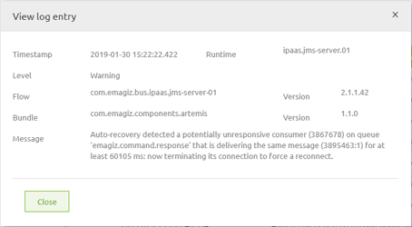
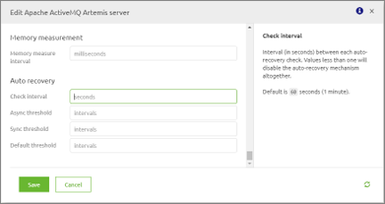

howto/upgrade-to-eMagiz5
How to upgrade a message bus completely to eMagiz 5
1. Introduction
This tutorial presents the possibilities of migrating a bus from eMagiz 4 to eMagiz 5.
The release notes of eMagiz 5 can be found here.
2. Requirements
In order to upgrade to eMagiz5, 4 conditions must be met:
2.1) Spring Integration 4: It is recommended that all flows have the value of the build number higher or equal to 32. All flows with a build number 22 or lower are not going to be able to upgrade and the ones between 22 and 32 are more errorprone. Firstly test your flows and then update them!
2.2) enable the Releases functionality in the deploy phase (this can be done by contacting your partner contact): you need to have this new way of deploying enabled in order to firstly make a release of the create phase containing only the flows which are currently running on production (be careful to have only what is correctly running on production) in order to have a safe eMagiz4 backup prior to the migration in case there will be any problems while upgrading to eMagiz5.
2.3) Java 8: the new framework works only from java 8 or higher. Java 8 is required for updating to the latest runtime version or the latest cloud template.
2.4.1) For on-premise environments only updating your java is not enough, you also need to install the eMagiz5 runtime. If you already have runtime version 5, a reinstall is not necessary. Start updating your runtimes now by downloading the latest version of the runtime from the eMagiz iPaaS if you have on-premise installations.
2.4.2) For environments running in cloud you just need to update to the newest template (at least R4 for AWS Cloud or instance template >= 21 for Root Cloud).
In order to proceed further with the migration, a validation from your partner contact is needed.
3. Preparation steps
3.1) Using the releases documentation create a copy of your latest Create phase for every environment(testing, acceptance and production) which can be considered the eMagiz 4 backup of this process so rename them accordingly(e.g. eMagiz4 backup). Make sure that each backup contains the versions of the flows that are currently running on that environment and only the flows that are completely running on production (both the onramp and its connector flows are running). It is recommended that the acceptance and production environments have the same flows running. It can be done by using the point 2.4 from this documentation
3.2) For on premise connectors make sure that the firewall has the amqp port 8443 opened
3.3) Go to Create -> Settings -> Message bus settings and copy the technical name of the bus. Then go to Deploy -> Properties and create 2 (or 4 if you have a failover bus) new properties for the host and port of the jms server(s). They should all be global, of type string and have the following content:
3.3.1) name: technical name + “.amqp01.host”, value: amqp01.cloud000x.emagizcloud.com (in order to replace the ‘x’ in this value you need to contact your partner contact)
3.3.2) name: technical name + “.amqp01.port”, value: 8443
3.3.3) (ONLY IF YOU HAVE A FAILOVER BUS) name: technical name + “.amqp01b1.host”, value: amqp01b1.cloud000x.emagizcloud.com (in order to replace the ‘x’ in this value you need to contact your partner contact)
3.3.4) (ONLY IF YOU HAVE A FAILOVER BUS) name: technical name + “.amqp01b1.port”, value: 8444
3.4) BE AWARE: If you ever changed the names of the connection factories, you should change them back to follow the convention('in-vm-connection-caching', 'in-vm-connection-plain') because otherwise the migration wizard will encounter problems.
3.5) Go to Deploy -> Properties and modify the data.dir property, you need to replace "hornetQ" with "artemis" (e.g. "/efs/data/hornetq/jms01" to "/efs/data/artemis/jms01")
3.6) Go to Create -> Settings -> AMQP -> Upgrade to AMQP wizard. It is recommended to upgrade the bus by using the method 4.1. If it does not succeed, then it is recommended to make use of the method from 4.2.
3.7) For environments where you have enabled debugging, go to Deploy -> Properties and create property "debug.channel-pattern" with value "." and property "debug.bridge-poller-interval" with value "0/5 * * * * *". The first value will make the debugger only intercept channels which have a channel that matches the channel pattern, in this way excluding the debugger channels. The second value will make that the debugger messages are polled once every 5 seconds. For disabling the debugger functionality, set the value "(disabled)" to the "debug.channel-pattern" property and the value "0 0 0 24 12 2" to the "bridge-poller-interval" property. Since there is no way to disable the polling of the debugger messages, the above expression will ensure that it is only triggered at midnight whenever the 24th of December is a Tuesday.
BEFORE PROCEEDING WITH THE NEXT STEPS: be aware that there is a development freeze period until the migration process is finished (during the step 4 of the migration) because the wizard is editing all the flows of the bus and has a lock on them.
4.The steps for migrating to eMagiz 5:
Note In case you do not want to upgrade all your connectors at once, pursue points 4.2.1) and 4.2.2) and then go to the two data grids below the wizard and upgrade all the connectors you want by selecting them one by one and press "Upgrade container" for each of them.
4.1 Using the "upgrade complete bus at once" button
4.1.1) Go to Deploy -> Releases and for each environment create a release based on the backup created during 3.1) named "eMagiz 5 migration".
4.1.2) Go to Create -> Settings -> AMQP -> Upgrade to AMQP wizard. Press the "upgrade complete bus at once" button. It might take a while until it finishes upgrading every flow from the bus. If it does not succeed, try again using the method from 4.2, starting with the point 4.2.1).
4.2 Using the "step by step" wizard
4.2.1) Press the button "Step 1: Upgrade JMS server(s)", and wait for the process to finish.
4.2.2) Press the button "Step 2: Upgrade process container(s)" and wait for the process to finish.
4.2.3) Press the button "Step 3: Upgrade connectors" and wait for the process to finish.
4.2.4) Press the button "Step 4: Remove backward compatibility of JMS server" and wait for the process to finish.
5.The deployment of eMagiz5
5.1) Go to Deploy -> Releases -> Details of the "eMagiz 5 migration" release -> Advanced actions -> Update to latest versions. Afterwards, in the same screen press "Set as active".
5.2) Go to Deploy -> Releases and for the active release press the install button and further install all the new versions of the flows displayed. After it finishes, in order to make sure that all flows were installed, press the install button again and make sure that there are no flows left uninstalled. Another way of checking would be to go to Deploy -> Runtime dashboard and press "Check release state".
5.3) Go to each container in the runtime dashboard and start the flow(s) in the following order:
5.3.1) If you have a failover bus: Firstly start the live JMS server, amqp01, and secondly the back up server, amqp01b1. In all other cases just start the jms server before any other flows.
5.3.2) Container(s): if you have multiple containers, you can use any order.
5.3.3) Connector(s): if you have multiple connectors, firstly start the exit connectors and then start the entry connectors.If you do it the other way around, the queues of the exit connectors start being filled up and the bus will have problems.
5.4) Go to Runtime dashboard and check if every flow is still active.
Note: It is recommended that the migration of the eMagiz Mendix Connector(s) to be done at last because it needs to be done 'one connector at a time' and depending on the number of Mendix systems that the bus contains, it might take quite some time.
Health checks (test cases)
Here are some bus health checks that you should do after the migration is finished and every flow seems to be running in the runtime dashboard:
Test the most ‘critical-integrations-chains’ of your bus. After the migration everything should work as before without the need of doing any manual change.
Test any flow where the user made any change related to the HornetQ JMS settings OR customised the autogenerated flows(jms server, container infra, connector infra) OR the autogenerated part of the flows(onramp, offramp, entry connector, exit connector, routing flow, error flow).
Test all the flows which contain unusual structures such as an entry/exit connector and combined entry connectors
Large message issues
This test is only applicable if you know that one of the systems in the bus is sending large messages. When is a message considered large?
- when sending a message from a HornetQ client, a message is considered to be large when it exceeds the default value of 100KB
- when sending a message from an AMQP client, a message is considered to be large when it exceeds the default value of 500KB
The issue with large messages happens when the consumer of the destination queue stops processing the messages and they start to pile up on it. No errors or warnings appear on the log. The issue has been addressed and should not occur anymore because an auto recovery mechanism has been introduced in eMagiz since build 36 to avoid this problem.
However, you should test to make sure that the default settings of the auto recovery mechanism work correctly in your use case. The auto recovery mechanism is configured to check every 60 seconds if a message takes longer than 4 minutes to be processed in asynchronous flows and 1 minute for synchronous flows. When that behavior is detected, the connection is reset and afterwards messages are processed again.
You can identify an auto recovery action by checking searching the log for Auto-recovery.

If a change in the autorecovery mechanism settings are needed, you can do it in the advanced tab of the artemis-server support object of the JMS server flow of the bus. You can find more information in the helptext about the different configurations.

Manually added queues
- when having integrations which contain manually added queues within the jms server flow they should be checked.
- usually used in entry flows which split messages. After the migration has ended, the manually added queues will be replaced with the message bridge and the h2 message store which might change the result delivered by the flow.
Note that Artemis does not have the JMS queue configurations settings section as HornetQ component anymore. In Artemis a queue is linked to an address. In eMagiz we configured that queues are created automatically and deleted automatically when needed. That means that you don’t need to configure anything to make this work. Your manually added queue will be created when a message is sent to that destination or a consumer tries to connect to that queue. On the other hand, the queue will be deleted when they have both 0 consumers and 0 messages. You will notice that the queue is deleted when you see in the logging “No Dead Letter Address configured for queue”.
Special HornetQ headers
- usually used for advanced messaging behavior
- can be recognized by using the prefix
_HQ_ - it will not work anymore because it needs to have the prefix previously mentioned adapted to AMQP (it can be looked up on the internet).
eMagiz Mendix Connector Migration steps
Go to Deploy -> On premises -> Runtime downloads and download the eMagiz Mendix connector with the eMagiz version emc 3.0.0. Be careful, this new version of the eMagiz Mendix Connector is not compatible with eMagiz4.
In case the standard configuration of the connector infra has been modified, it should be checked to make sure the desired values are still in place.
Next part is about upgrading the eMagiz Mendix Connector of the Mendix project. In order to do that, you can use the following documentation. The eMagiz Mendix Connector version you need to download is 3.0.0. It is mandatory to do a cleanup of the project directory after finishing upgrading the eMagiz Mendix Connector.
Go to Deploy -> Releases, press install for the release you created. In the popup page that opens, download the ".emc" package needed for deploying the eMagiz Mendix connector of the Mendix project where you have just upgraded the eMagiz Mendix connector.
Note: when it comes to the deploy packages, the versions of the connector infra and the request handler of a system MUST have the build number 3 (e.g. x.y.z.3) while the one of the connector (entry or exit flow) can be 2 or 3 (e.g. x.y.z.2 or x.y.z.3).
Run the Mendix project
Go to the eMagiz Mendix connector tab
Press upload and load there the file you downloaded from the eMagiz iPaas at step 3.
Press save to return in the eMagiz Mendix connector tab.
Start the flows in the following order:
9.1) The connector infra
9.2) The request handler
9.3) If you have multiple connector flows, firstly start the exit connectors and then the entry connectors. If you do it the other way around, the queues of the exit connectors start being filled up and the bus will have problems.
9.4) In case your connector does not work check the eMagiz Mendix Connector health checks
eMagiz Mendix Connector Health checks
- If the communication between the eMagiz Mendix Connector and the eMagiz iPaaS does not work it might be the case that you have custom keystore/truststore used by the eMagiz Mendix Connector, so you should try downloading the new autogenerated ones (Create -> Resources) and put them in the resources folder of the Mendix Connector.